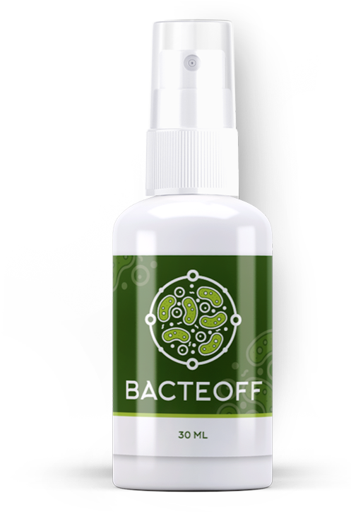
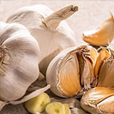

Bacteoff
Ваша защита от всех видов паразитов

выведение паразитов
полная детоксикация
восстановление микрофлоры
усиление иммунитета
Универсальная растительная формула
Эффективна против ленточных, круглых, плоских паразитов
Уничтожает паразитов на всех жизненных циклах развития
Снижает интоксикацию во время выведения продуктов распада
Восстанавливает микрофлору и стабилизирует кровообращение
Усиливает иммунитет, устраняя риск повторных заражений
Что вы представляете, когда слышите словосочетание "паразитарная инвазия"?
Ком мерзких червей из фильма ужасов?
Теперь представьте, что вы слышите это в кабинете врача. В результатах анализов зафиксирован факт, что у вас внутри черви-паразиты.
Этим объясняется:
гастрит
нарушения пищеварения
ангина
частые
ОРЗ
ожирение
головные боли
кожные проблемы
заложенность носа
аллергические реакции
воспаления
болезни суставов
опухоли
проблемы со сном
синдром хронической усталости
Паразитарная инфекция вызывает симптомы, напоминающие картину других заболеваниЙ.
Многие хронические болезни имеют паразитарную природу или утяжеляются наличием паразитарной инфекции.

Глаза:
демодекоз, миазы, онхоцеркоз, телязиоз, цистицеркоз.


Головной мозг:
альвеококкоз, цистицеркоз, эхинококкоз, токсоплазмоз, первичный амебный менингоэнцефалит.

Кожа:
чесотка, крысиный клещевой дерматит, педикулёз, пуликоз, саркопсиллёз, тромбидиаз, фтириаз, хемиптероз.

Сердце:
дирофиляриоз, эхинококкоз.

Желудочно-кишечный тракт и печень:
анкилостомоз, аскаридоз, кишечные миазы, лингватулидозы, метагонимоз, скарабиаз, стронгилоидоз, трихинеллез, трихостронгилоидоз, трихоцефалез, энтеробиоз, альвеококкоз, клонорхоз, описторхоз, фасциолез, эхинококкоз.

Мочевой пузырь, половые органы:
уринарный миаз, альвеококкоз, эхинококкоз.
ПРИРОДНАЯ ЭФФЕКТИВНОСТЬ, ДОКАЗАННАЯ НАУЧНО
В составе Bacteoff комбинация растительных экстрактов, оказывающая на жизнедеятельность паразитов негативное действие. Помогая организму наладить процессы мочеобразования, желчеотделения и пищеварения, Bacteoff стимулирует полную детоксикацию, избавляя от всех видов паразитарных организмов.
ЗАКАЗАТЬ
Состав Bacteoff

Ламинария
Благодаря большому содержанию клетчатки, нормализуется работа пищеварительного тракта и улучшается состояние здоровья в целом. А альгинаты и органические кислоты эффективно очищают организм от вредных веществ.

Репешок
Оказывает губительное действие на большинство паразитов, поражающих человека. Содержит полиненасыщенные кислоты, эфирные масла и комплекс витаминов и микроэлементов, которые положительно влияют на все органы и системы человеческого организма.

Чёрный тмин
Содержит алкалоиды, флавоноиды, дубильные вещества, которые подавляют рост и развитие паразитов, способствуют восстановлению нормальной микрофлоры кишечника, ускоряют регенерацию поврежденных слизистых оболочек и выводят продукты их жизнедеятельности.

Цветы пижмы
Обладает мочегонными и желчегонными свойствами, что позволяет быстрее выводить токсины, которые выделяют паразиты во время их уничтожения.
Тысячелистник
В составе есть горечь, которая считается антагонистом паразитов, обитающих в пищеварительном тракте человека. Также содержит природный токсин – кетон туйон, который губительно действует на паразитов, парализуя их.

Чеснок
Наличие горечи и смол создают невыносимую среду для жизнедеятельности паразитов. Кремний помогает выводить токсины и вредные вещества из организма. Инулин, аскорбиновая кислота, витамин B и D, жирные масла укрепляют иммунитет.
ЛУЧШЕЕ, ЧТО МОЖНО СДЕЛАТЬ — ЭТО ПРОФИЛАКТИКА
Зачастую причина различных серьезных заболеваний внутренних органов – интоксикация организма, вызванная гельминтозом.
Симптомы зависят от вида паразитирующих глистов, их размера и места обитания в организме. Не редки случаи полностью отсутствующей симптоматики. Именно поэтому я рекомендую периодически проходить профилактический курс очистки от паразитов и принимать противогельминтные препараты.
Своим пациентам на протяжении долгого времени я назначаю BACTEOFF. Их многочисленные положительные отзывы об этом средстве говорят сами за себя. BACTEOFF – эффективный, натуральный и полностью безопасный препарат. За 1 курс применения он избавляет от всех видов гельминтов даже при запущенных случаях заболеваний.
Устранить вовремя причину – значит не тратить зря время и деньги на последствия. Поэтому я рекомендую всем, кому не безразлично свое здоровье, помочь своему организму с помощью BACTEOFF.
Симон Петру
Инфекционист с 8-летним стажем.

Отзывы:

Anna Anselm, 42 года
Не думала, что когда-нибудь это коснется и меня тоже. В прошлом году появились боли в животе, мучилась с постоянным вздутием. После долгого обследования выяснилось, что виноваты во всем паразиты. Я так благодарна грамотному доктору, который сразу назначил мне BACTEOFF. Все неприятные симптомы ушли сразу же. После курса лечения сдала все анализы и убедилась, что мой организм полностью чист. BACTEOFF – лучшее средство для избавления от паразитов!


David Seifert, 63 года
Я 4 месяца вел борьбу с гельминтами. Принимал разные лекарства, а затем мучился от их побочных эффектов: головокружение, бессонница, учащенное сердцебиение и т. д. Но самое главное – не было результата лечения, моя проблема оставалась со мной. Все изменилось с тех пор, как моя дочь прочитала в интернете статью о препарате BACTEOFF и заказала его для меня. Могу с уверенностью сказать, что это очень эффективное и натуральное средство. Благодаря ему, я полностью здоров и чувствую себя отлично.

Janine Hudson, 49 лет
Я была в ужасе, когда по возвращению из отпуска я обратилась к врачу с жалобами на плохое самочувствие, и он поставил диагноз – анкилостомоз. Это паразитарная инвазия, возбудитель которой – круглые черви из рода Ancylostoma. К счастью, BACTEOFF справился с этой проблемой оперативно. Теперь принимаю раз в полгода этот препарат для профилактики. Жалею, что не знала о нем раньше. Всем советую!
ПОЖАЛУЙСТА, ОБРАТИТЕ ВНИМАНИЕ!
Количество упаковок, необходимое для желаемого результата, определяется индивидуально и в отдельных случаях может увеличиться.
Bacteoff
Ваша защита от всех видов паразитов
выведение паразитов
полная детоксикация
восстановление микрофлоры
усиление иммунитета